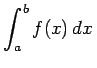
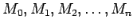

Inhalt Index DeskTop Bronstein

 Integralrechnung Bestimmte Integrale Grundbegriffe, Regeln und Sätze Berechnung bestimmter Integrale
Integralrechnung Bestimmte Integrale Grundbegriffe, Regeln und Sätze Berechnung bestimmter Integrale


Graphische Integration ist eine graphische Verfahrensweise, um die als Kurve AB (s. Abbildung) gegebene Funktion y = f(x) zu integrieren, d.h. das Integral , das die Größe der Fläche M0ABN angibt, graphisch zu berechnen.
| (8.55a) |
in 2n gleiche Teile eingeteilt, wobei das Ergebnis um so genauer ausfällt, je größer die Anzahl der Teilungspunkte ist.
| (8.55b) |
werden Lote bis zum Schnitt mit der Kurve errichtet. Die so gewonnenen Ordinatenwerte werden als Strecken auf der y-Achse abgetragen.
| (8.56) |
Mit Hilfe der beliebig wählbaren Strecke werden die Ausmaße der Zeichnung bestimmt; je kleiner die zulässigen Abmessungen der Zeichnung sind, desto größer ist zu wählen. Für ergibt sich , und der Polygonzug  entspricht angenähert dem Kurvenbild der Stammfunktion von  , d.h. dem unbestimmten Integral .
, d.h. dem unbestimmten Integral .